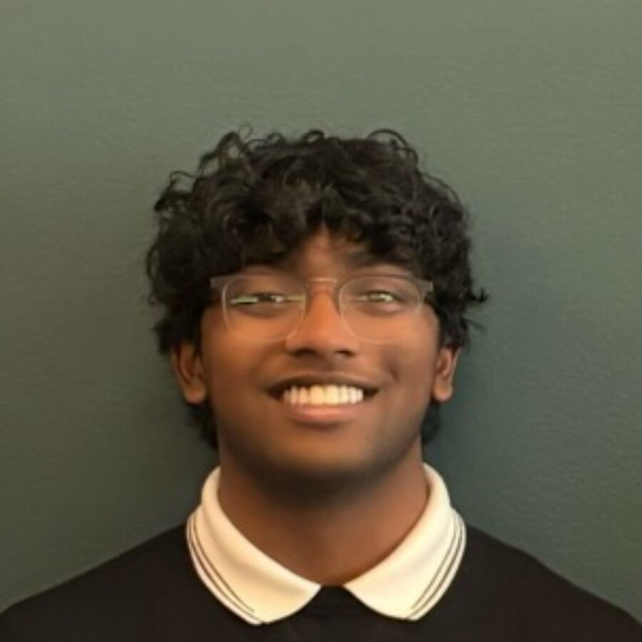
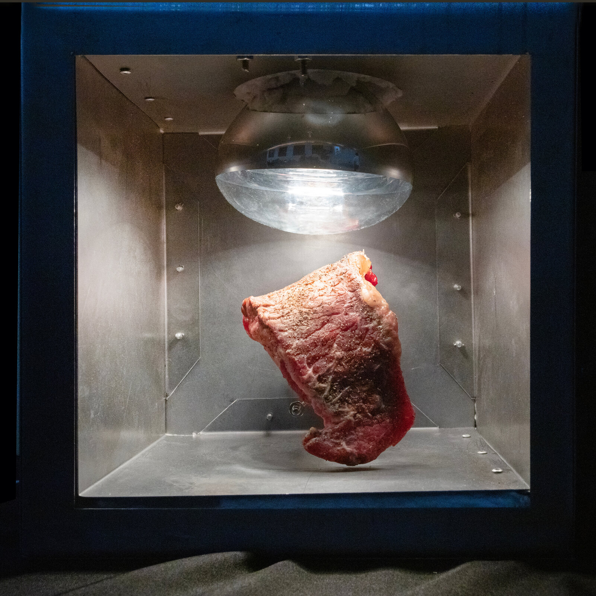
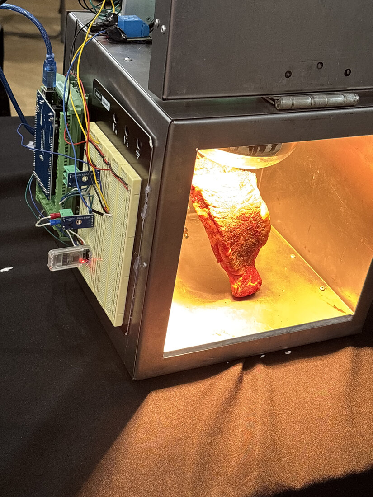
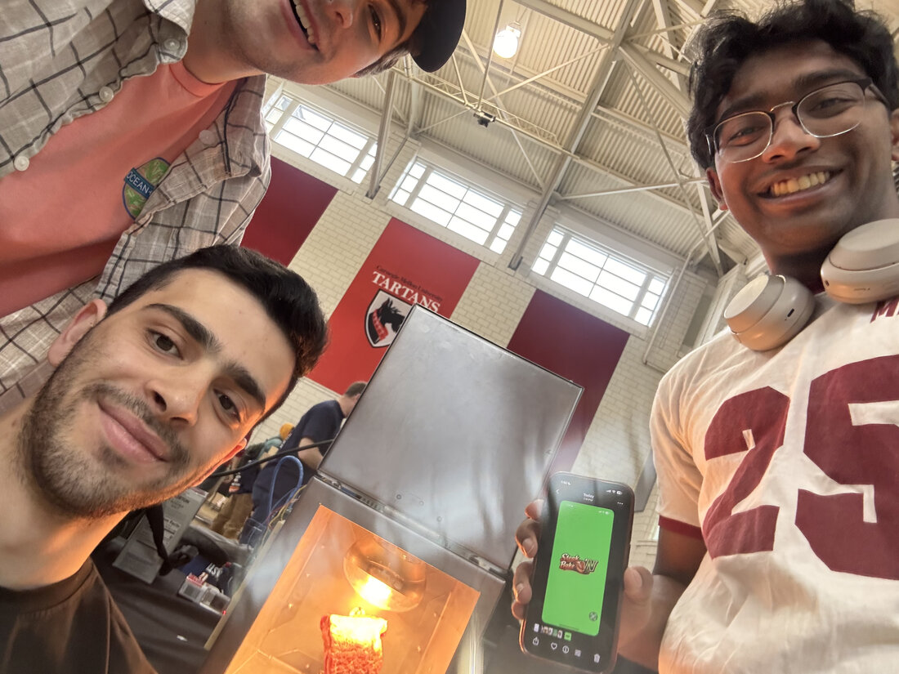

Akhil Peyyala
I build systems that turn raw signal into trustworthy action — from a fraud-detection pipeline that watches its own inputs for drift, to a steak that cooks itself and tells your phone how it's doing.

Comfortable in the model and in the wiring
I'm a Computer Science student at Carnegie Mellon, concentrating in Machine Learning. I'm drawn to the boundary between what a model predicts and what actually has to happen in the real world because of it — flagging when a fraud model's inputs have quietly drifted, or getting an iPhone app to talk to a breadboard over Bluetooth in real time.
I'm currently a Software Engineering Intern at PNC Financial Services, working across AI tooling and fraud-detection infrastructure. Outside of that, I'm usually building something with my hands — most recently, an automated steak-cooking device that earned a CrowdStrike innovation award at CMU's Build18.
- School
- Carnegie Mellon University
- Major
- Computer Science, ML Concentration
- Graduating
- May 2028
- Interests
- Applied ML, agentic systems, embedded & hardware
PNC Financial Services
Most of my work at PNC sits at the seam between AI systems and the infrastructure that keeps them honest — building tools that act on unstructured data, and the monitoring that catches them when they start acting on bad data.
- Built an AI-powered engineering platform on Microsoft Copilot Studio, Power Automate, and Microsoft 365 that read team communications and turned them into action items and task summaries automatically, cutting down the manual overhead of tracking what needed to get done.
- Built a Hopsworks-based feature monitoring and drift-detection system for debit card fraud detection — deriving features like average transaction amount from raw data, comparing their distributions against training-data baselines, and generating alerts when drift crossed a configurable threshold, using Python, PySpark, and Jupyter Notebooks.
- Prepared 20+ enterprise repositories for a Bitbucket-to-GitHub Enterprise migration: validating readiness, resolving blockers like permissions gaps and merge conflicts, and writing the documentation that onboarded other teams onto the new workflow.
- Worked across engineering, platform, and vendor teams to troubleshoot CI/CD, repository, security-scanning, and feature-store issues, and presented findings at technical capstone demonstrations.
Steak N' Bake

A steak that cooks itself, and tells your phone about it
Steak N' Bake is a custom-built, automated steak-cooking device: a countertop rig that suspends a steak under a heat lamp and cooks it to spec while you track the temperature climb from your phone. I own the software side end to end — a SwiftUI iOS app to control and monitor the device, and the Bluetooth Low Energy layer that lets it talk to the Arduino-controlled hardware in real time.
I led all of the software structure, implementation, and debugging, working closely with the teammates building the physical rig, and built out live telemetry — temperature streaming and connection status — so the cook is something you can actually watch happen, not just wait on.


What I build with
Languages
- Java
- Python
- C / C++
- Object-oriented programming
AI & ML
- AI solution implementation
- Large dataset handling
- Hopsworks
- Claude Code
Web & Mobile
- React.js
- Swift / SwiftUI
- HTML
Tools & Collaboration
- Git / GitHub
- Power Automate
- Jupyter
- Agile / Jira